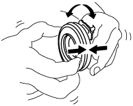

CLUTCH RELEASE COLLAR INSPECTION [F65M-R]
id0510q1157300
Operation Inspection
1. Turn the collar while applying force in the axial direction, and inspect for sticking, excessive resistance, and an abnormal noise.
